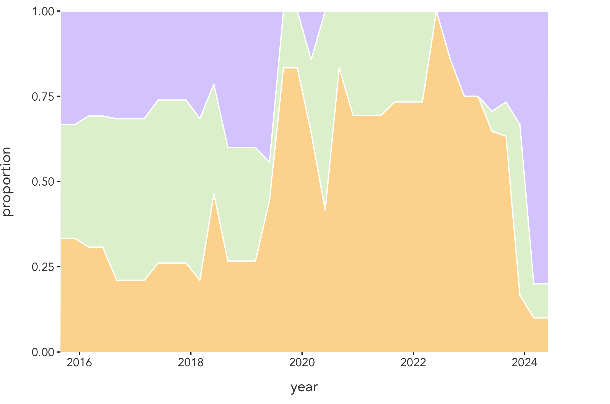

mindylynnng@gmail.com // +1 510 374 9871 // LinkedIn
Hello! My name is Mindy Ng and I am a data science and visualization engineer, a STEAM educator and curriculum developer, and a professional dancer based in the Bay Area, California.
Over the years I have had a wide variety of professional, academic, and extracurricular experiences in various sectors and roles, and recently noticed that they have all fallen into 3 core themes: (1) Data and Technology, (2) Education and Community Building and (3) Arts and Storytelling. These themes have become pillars, anchoring and guiding me through my career path thus far.
I was curious about how my involvement in each of these themes has fluctuated over time. Have I maintained a balance or have certain ones taken up more of my time at different periods of my life? I decided to visualize it with data.
This first visual is an interactive chart that shows an overview of my experiences from September 2015 (when I began my undergraduate studies at Brown University), to the present. Hover over or click on the items to reveal more information about each experience.
At a glance, the presence of each color seems relatively balanced, however I noticed more purple (arts) experiences in my earlier and more recent years of my career. The middle years tend to have more orange (tech) and green (education). To check if this observation was correct, I used a stacked area chart.
Read more about the data and process here.
Experience Timeline
Category
Evolution of My Experience Over Time
Description
This stacked area chart shows how the proportion of time I spent on the three categories: Arts, Technology, and Education through my professional and extracurricular experiences evolved over time (September 2015 to May 2024). This graphic was made using the ggplot2 R library.
Category